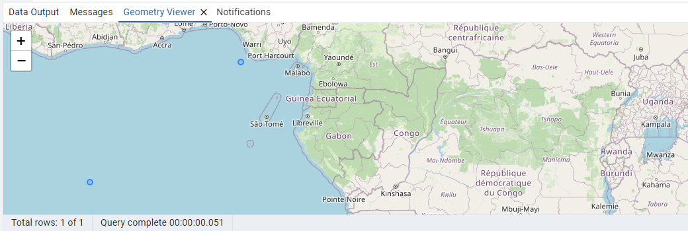

공간데이터베이스 연습문제
Q. 다음과 같은 food 테이블을 SQL문을 이용해 생성

A.
create table food
(
name varchar(20),
price int
);
Q. food 테이블에 SQL을 사용해 값 입력하기(데이터 추가)
A.
insert into food (name, price) values ('짜장면', 6000);
insert into food (name, price) values ('탕수육', 21000);
insert into food (name, price) values ('연어구이', 11000);
insert into food (name, price) values ('고등어구이', 12000);
insert into food (name, price) values ('짬뽕', 7000);
Q. 다음과 같이 점이 지도에 표시되도록 자료 입력

A.
insert into point_test (location, name) values
('point( 5 4 )', '금 묻은 곳');
Q. 다음과 같이 점이 지도에 표시되도록 자료 입력

A.
insert into point_test (location, name) values
('point( -5 -4 )', '은 묻은 곳');
Q. 다음과 같이 점들이 지도에 표시되도록 1개의 자료 입력

A.
insert into multi_point_test (location, name) values
('multipoint( -5 -4, 5 4 )', '해상 공원');
Q. 다음과 같이 점들이 지도에 표시되도록 1개의 자료 입력

A.
insert into multi_point_test (location, name) values
('multipoint( -10 -11.5, 10 3 )', '석유 매장 추정지');
Q. 다음과 같이 선이 지도에 표시되도록 1개의 자료 입력

A.
insert into line_test (location, name) values
('lineString(-10 12.7, 10 11.5 )', '이동 최단거리');
Q. 다음과 같이 선이 지도에 표시되도록 1개의 자료 입력

A.
insert into line_test (location, name) values
('lineString(-20 -12.7, -10 -11.5, 5 3.7 )', '이동 최단거리');
Q. 다음과 같이 여러 선이 지도에 표시되도록 1개의 자료 입력

A.
insert into multi_line_test (location, name) values
('MultiLineString( (20.5 0.5, 20.6 0.6 ), (20.8 0.6, 20.95 0.61) )', '등산로');
Q. 다음과 같이 여러 선이 지도에 표시되도록 1개의 자료 입력

A.
insert into multi_line_test (location, name) values
('MultiLineString( (3 4, 3 5, 4 6, 5 4 ), (0 1, 1 1, 2 2, 3 1, 1 0) )', '등산로');
Q. 다음과 같이 면이 지도에 표시되도록 1개의 자료 입력

A.
insert into polygon_test (location, name) values
('polygon( (3 4, 3 5, 4 6, 3 4 ) )', '어장1');
Q. 다음과 같이 면이 지도에 표시되도록 1개의 자료 입력

A.
insert into polygon_test (location, name) values
('polygon( (3.5 4, 3.3 5.2, 4.7 6.1, 5.0 3.5, 5.3 3.2, 3.5 4 ) )', '어장 2');
Q. 다음과 같이 여러 면이 지도에 표시되도록 1개의 자료 입력

A.
insert into multi_polygon_test (location, name) values
('Polygon( (3 -5, 4 -5, 2 -6, 3 -5 ), (2.5 -7, 5 -8, 4 -9, 2.5 -7) )', '석유 매장지');
Q. 다음과 같이 여러 면이 지도에 표시되도록 1개의 자료 입력

A.
insert into multi_polygon_test (location, name) values
('Polygon( (1 4, 1 5, 2 6, 1 4 ), (3.5 4, 3.3 5.2, 4.7 6.1, 5.0 3.5, 5.3 3.2, 3.5 4 ) )', '어장들');